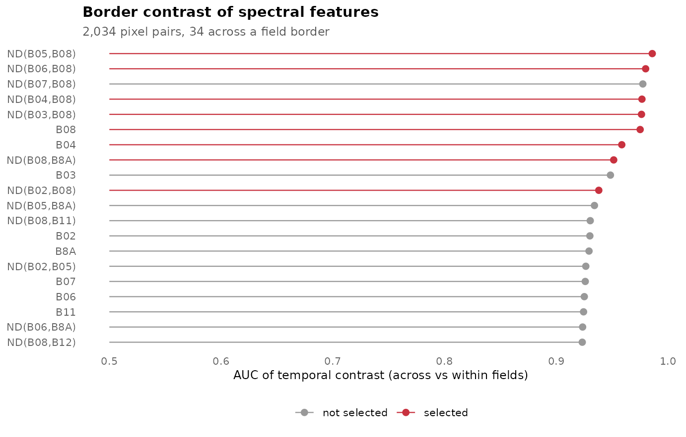
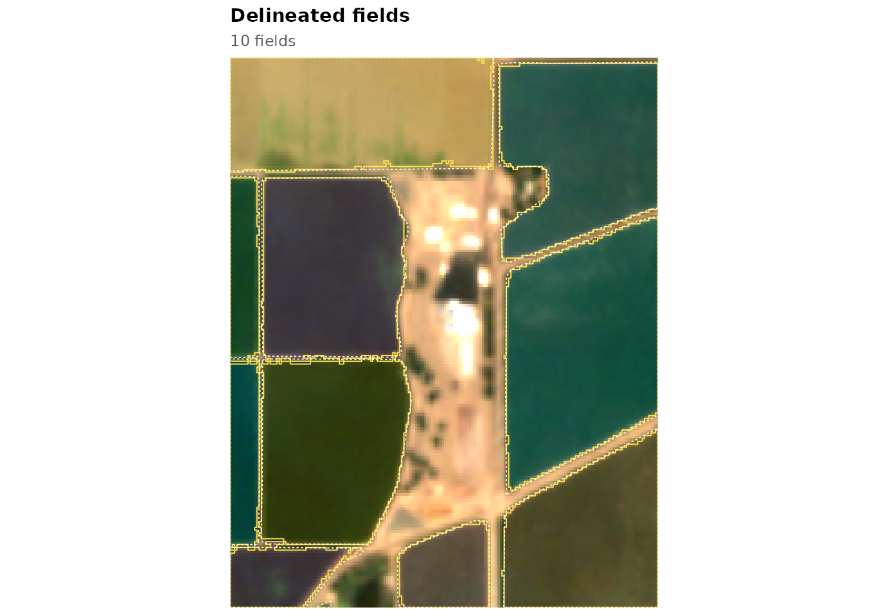

The pretrained models were fitted on irrigated and dryland
agriculture in California and Washington. Where reference fields exist
for your region, train a model on them, alone or together with other
regions, and compare it with the pretrained models on separate tiles: in
the validation, a model fitted on California and Washington together was
at least as accurate on Washington test tiles as one fitted on
Washington alone. This article trains a model on the California example.
The window is small and the same fields are used to train and to
evaluate, so the code shows the steps, not the accuracy to expect; with
real data, fit, tune and test on different tiles, as in the validation
of the package (vignette("validation")).
library(fieldborders)
library(ggplot2)
s <- fb_example_stack("california")
fields_poly <- sf::st_read(fb_example_files("california")$fields, quiet = TRUE)Reference raster
fb_reference() burns the reference polygons into the
image grid: field interiors are class 1, polygon outlines class 2 and
everything else background (class 0):
ref <- fb_reference(fields_poly, s)
terra::freq(ref$class)
#> layer value count
#> 1 1 0 7691
#> 2 1 1 27370
#> 3 1 2 1803When only some fields of an area are mapped (one crop, say), pixels
outside the polygons are not known to be background. Use
presence_only = TRUE: they become class 3, which training
ignores and which does not count against a delineation as false
positives.
Which features show the borders?
Every candidate feature, by default the ten bands and their 45
normalised differences, is compared between the two ends of pixel pairs
that straddle a border between two fields (across pairs) and of
pairs inside one field (within pairs). For each pair the
contrast log(|f(p) - f(q)| + 1e-4) is computed on every
date that is clear at both ends, and its maximum and mean over the
season are kept. fb_rank_contrast() ranks the features by
the area under the ROC curve with which the seasonal maximum separates
across from within pairs:
rk <- fb_rank_contrast(s, ref, n_pairs = 2000)
rk
#> <fb_contrast> 2034 pairs ( 34 across ), 55 features, 1 strata
#> feature type auc
#> ND(B05,B08) nd 0.986
#> ND(B06,B08) nd 0.980
#> ND(B07,B08) nd 0.978
#> ND(B04,B08) nd 0.977
#> ND(B03,B08) nd 0.976
#> B08 band 0.975
#> B04 band 0.959
#> ND(B08,B8A) nd 0.951
#> B03 band 0.949
#> ND(B02,B08) nd 0.938fb_select_features() walks down the ranking and skips
features that are strongly correlated (Spearman’s rho above 0.9) with
one already chosen:
sel <- fb_select_features(rk, k = 8)
sel
#> [1] "ND(B05,B08)" "ND(B06,B08)" "ND(B04,B08)" "ND(B03,B08)" "B08"
#> [6] "B04" "ND(B08,B8A)" "ND(B02,B08)"
fb_plot_ranking(rk, n = 20, selected = sel)
Here normalised differences between the red-edge and near-infrared bands lead: they follow canopy development, which differs between neighbouring fields through the season.
Published spectral indices
With the svid package installed, the candidates can
include the published indices of its catalogue, rewritten in Sentinel-2
band names, and expressions generated by an svid
grammar:
fs <- fb_feature_set(fb_example_bands(), set = "svid")
table(fs$type)
#>
#> band nd svid
#> 10 45 193
rk_svid <- fb_rank_contrast(s, ref, features = fs, n_pairs = 2000)
head(rk_svid$ranking[, c("feature", "type", "auc")], 10)
#> feature type auc
#> 1 ND(B05,B08) nd 0.9859853
#> 2 svid:NDREI svid 0.9859853
#> 3 svid:GARI svid 0.9839853
#> 4 svid:GOSAVI svid 0.9801324
#> 5 ND(B06,B08) nd 0.9800588
#> 6 ND(B07,B08) nd 0.9775441
#> 7 ND(B04,B08) nd 0.9767647
#> 8 svid:IPVI svid 0.9767353
#> 9 svid:NDVI svid 0.9767353
#> 10 svid:PI svid 0.9767353Training
fb_train() fits the edge model, a logistic regression on
the seasonal maximum and mean contrasts of the selected features, and
the cropland model, gradient-boosted trees (or a random forest with
learner = "ranger", or a logistic regression with
learner = "glm") on per-pixel temporal percentiles of the
bands and three indices. Passing the ranking avoids computing the pair
contrasts twice:
m <- fb_train(s, ref, contrast = rk, k = 8, n_pixels = 5000, seed = 1)
m
#> <fb_model> temporal boundary contrast
#> bands : B02, B03, B04, B05, B06, B07, B08, B8A, B11, B12
#> edge features : ND(B05,B08) | ND(B06,B08) | ND(B04,B08) | ND(B03,B08) | B08 | B04 | ND(B08,B8A) | ND(B02,B08)
#> cropland learner : xgboost
#> training : 1 tiles, 2,034 pairs (34 across), 10,000 pixels
#> in-sample AUC : edge 0.999, cropland 1.000
#> thresholds : t_edge 0.50, t_field 0.50, min_size 50 pixelsSeveral tiles are passed as lists. For many large tiles, the list
elements can be functions that load a tile when it is needed, so that
only one tile is in memory at a time; strata averages the
feature ranking over regions or field types:
# one folder of monthly images (file names with dates) and one GeoPackage of fields per tile
tiles <- c("tile_01", "tile_02", "tile_03")
images <- function(t) list.files(file.path("s2", t), pattern = "\\.tif$", full.names = TRUE)
load_stack <- function(t) function() fb_read_stack(images(t), bands = fb_example_bands())
load_ref <- function(t) function() {
fb_reference(sf::st_read(file.path("labels", paste0(t, ".gpkg")), quiet = TRUE), terra::rast(images(t)[1]))
}
m <- fb_train(lapply(tiles, load_stack), lapply(tiles, load_ref), strata = c("irrigated", "irrigated", "dryland"))Thresholds
Three thresholds turn the maps into fields: seeds are pixels with
cropland probability above t_field and edge probability
below t_edge, and objects smaller than
min_size pixels are dropped. fb_tune()
evaluates every combination on tiles with reference fields and returns
them sorted by object F1:
maps <- fb_tbc_maps(s, m)
tn <- fb_tune(maps, ref, t_edge = c(0.2, 0.3, 0.4, 0.5, 0.6), t_field = c(0.5, 0.7, 0.9),
min_size = c(0, 50, 100, 200))
head(tn)
#> t_edge t_field min_size tp fp fn precision recall f1
#> 1 0.2 0.5 50 10 0 1 1 0.9090909 0.952381
#> 2 0.2 0.5 100 10 0 1 1 0.9090909 0.952381
#> 3 0.2 0.5 200 10 0 1 1 0.9090909 0.952381
#> 4 0.3 0.5 50 10 0 1 1 0.9090909 0.952381
#> 5 0.3 0.5 100 10 0 1 1 0.9090909 0.952381
#> 6 0.3 0.5 200 10 0 1 1 0.9090909 0.952381
m$thresholds <- as.list(tn[1, c("t_edge", "t_field", "min_size")])Choose the thresholds on tiles that are not used to fit the model, and report accuracy on a third set of tiles.
fb_plot_fields(fb_delineate(maps, thresholds = m$thresholds), s, date = 7, reference = fields_poly)
Saving the model
f <- tempfile(fileext = ".rds")
fb_save_model(m, f)
m2 <- fb_load_model(f)
identical(m2$edge, m$edge)
#> [1] TRUEA fusion for your region
With deep-model probabilities on the training tiles,
fb_fit_fusion() fits the combination of the two models on
the same reference rasters:
dl <- fb_read_probabilities(fb_example_files("california")$prue)
fu <- fb_fit_fusion(maps, dl, ref, seed = 1)
fu
#> <fb_fusion> logistic fusion of deep-model and TBC maps
#> boundary: 0.020 + 0.114 logit P(boundary) + 0.207 logit(edge)
#> field : 2.606 + 0.090 logit P(field + boundary) + 0.782 logit(cropland)
#> thresholds: t_edge 0.40, t_field 0.50, min_size 50 pixels